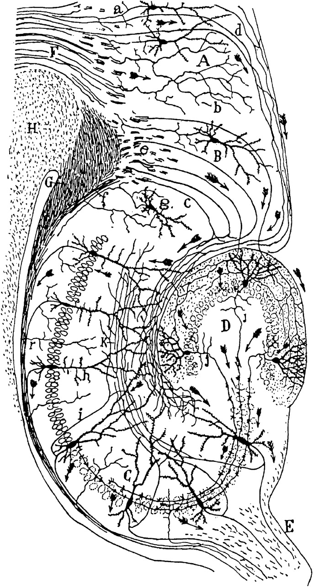
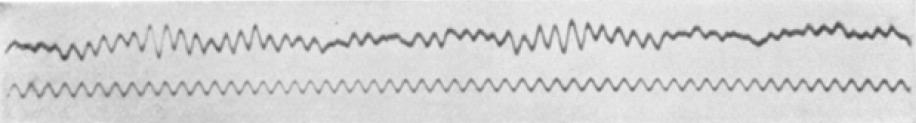

Darin DavisJohnson
Student researcher at KIST in Seoul. I build machine learning and signal analysis for brain data, and for the business questions that sit next to it.

Find the bursts
Brain rhythms arrive in short bursts. This is a synthetic trace, and the detector is the same idea I use on real recordings: filter, take the envelope, then threshold. Drag the threshold and watch what gets caught.
Projects

Research
At KIST I build the software that lets neuroscientists ask questions of their data, and use AI on mouse recordings to find structure that is hard to see by eye.
The work started with EEG: time-frequency analysis on large datasets, then end-to-end pipelines that take a raw recording to a figure someone can argue about. Next is robotics, in the master's.
Longer term I want to take these methods into industry, where a model has to earn its place by changing a decision.
